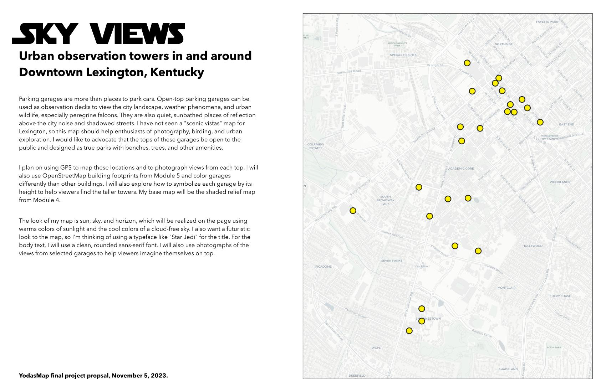
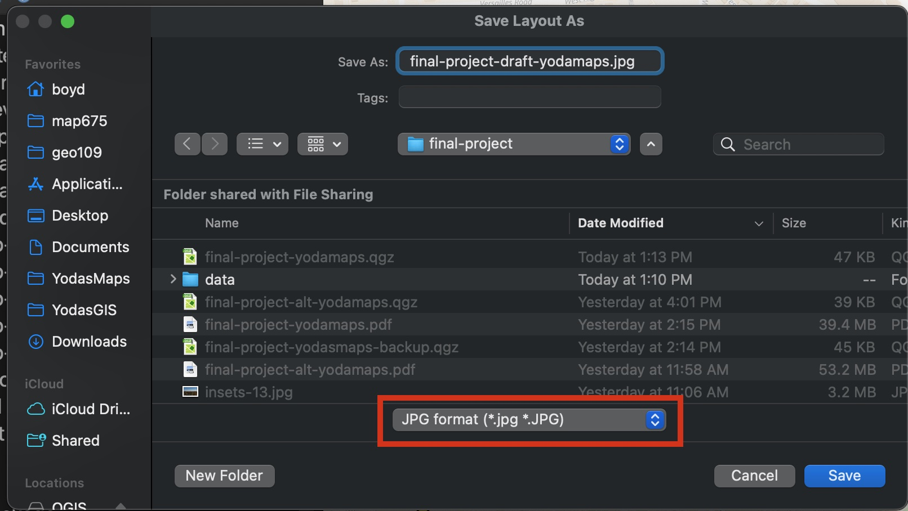
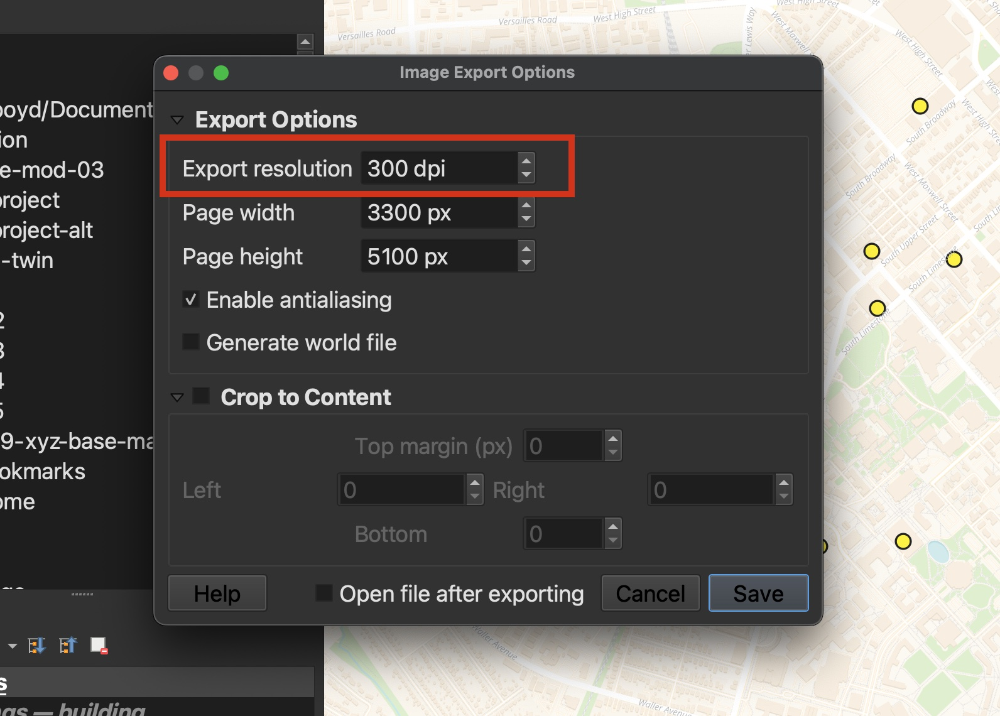
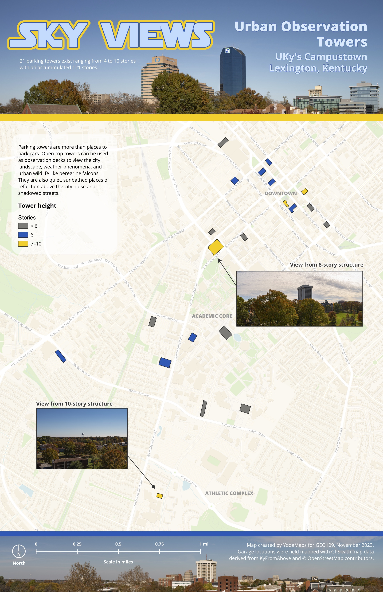
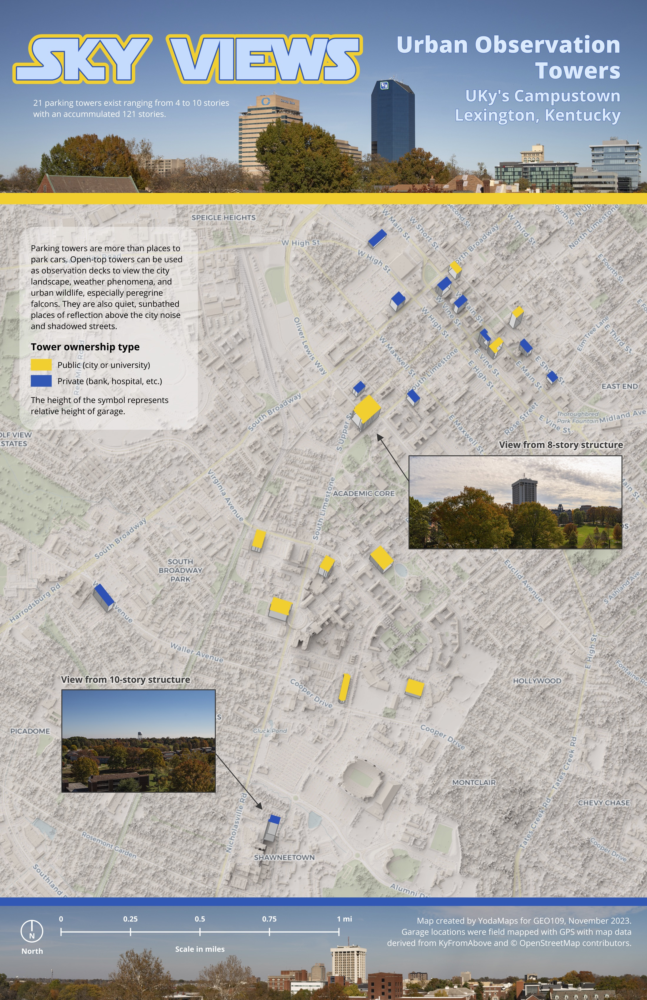

Presentation
Open in new tabPresentation Topics
- Introduction & announcements
- Examples from lab 5
- Thinking of a map topic
- Proposal
- Technical demonstrations
Final Project
Your journey in this course has followed the typical path a map maker takes when creating a map. We started with finding and creating data, manipulating and analyzing the data, and finally designing and publishing the map. The final project will be a culmination of all the skills you have learned in this course.
However, one dimension of map making has been overlooked. What do you want to map? What is the story you want to tell and the purpose of your map? These are questions that need to be answered before you start making a map. The topic and design are completely up you. For example, we have seen fishing hot spot maps, vending machines in Tokyo maps, a wide variety of sporting maps, and maps made as holiday gifts. The possibilities are endless – you first need to find a topic that interests you.
Table of Contents
Final project proposal
Finding a topic might be easy for you. If not, think about places that bring you, or people you care about, joy. Study the geography around these places and describe why and how they do so. Or, maybe you see problems or injustice in the world that you want to bring attention to. Write a short paragraph explaining why your map needs to be made, who is the audience, and what is the desired outcome.
Once you have a topic, try making a concise yet compelling statement about it. This will be the title of your map. For example, “The Best Places to Eat in Lexington, Kentucky” or “The Impact of COVID-19 on the Kentucky Economy”. Then, make a subtitle that elaborates more on the topic. The title and subtitle should address the “what and where” of your topic.
Now, you need observations, a.k.a. data, to map. We have discovered many methods to obtain data. You can:
- Create observations from existing maps by encoding them as list of latitude and longitude coordinates or digitizing them in QGIS.
- Create new observations by GPS mapping them in the field.
- Download existing data from the internet. Remember to look for spatial data formats like Shapefiles and GeoJSONs. If you need help finding sources of data, please ask and we will help you.
- Manipulate spatial layers in QGIS to create new data. For example, you can use the
BufferandCliptools to find features in one layer that are within distance of features in another layer.
Map making is often a mix of all these methods. Think about the approaches that you would like to take. If you are going to download data, where will you look? If you are going to digitize features, what maps will you use as a reference? If you are going to manipulate data, what tools will you use? If you are going to GPS map features, where will you go? Write a short paragraph describing your method of obtaining data.
What is your area of interest? Will you map the entire world or a small neighborhood? Using QGIS and a base map, zoom to your area of interest. Think about the projection you might use. For example, if you are mapping the entire world, you should use the Equal Earth projection. If you are mapping a small neighborhood, you will want to use a local projection tuned to that area.
Think about the design of your map. What is the “vibe” you want to convey? What map elements will you use to tell your story? Will you use photographs or other images? Write a short paragraph describing your intended design.
Finally, you will create a proposal for your final project. The proposal will be a 11 x 17 inch QGIS layout that includes a title, subtitle, map of the area of interest, and three paragraphs describing your project. We suggest that paragraphs be written in a word processor, edited for typos and grammatical errors, and then copied and pasted into the layout. The layout should be exported as a GeoPDF file.
Example proposal
This example shows a proposal for the urban observation tower project. While the map of the area of interest shows data, you do not need to have data in your map. But, if you do have data, please add it. The map of the area of interest is just to show the location of your project.

Downtown Urban Observation Towers in Lexington, Kentucky
Step-by-step instructions
- Create a title and subtitle for your map.
- Write a paragraph that explains why your map needs to be made, who is the audience, and what is the desired outcome.
- Write a paragraph discussing your method of obtaining the data. For example, will you GPS map your features or do you plan on downloading data from somewhere? If you have data already, where did you get it from? If you are looking for data, tell us where you plan on looking – we might be able to help.
- Write a paragraph discussing your intended design and what type of map elements you will use to tell your story. Do you plan on using photographs or other images? Will you use a particular typeface to convey a certain mood or feeling? Summarize the overall look or tone of your map with three words.
- Create a new QGIS project called, “final-project-linkblue” (replacing “linkblue” with your linkblue name) and save it in your class workspace.
- Add a base map to the Map Canvas and zoom to your area of interest.
- Create an 11 x 17 inch layout and add the map showing your area of interest.
- Add the title and subtitle created in the first step to the layout. Experiment with the typeface and size to create a captivating title.
- Add the paragraphs created in the second through fourth steps to the layout.
- Add your name and the date to the layout.
Video: Completing the final project proposal (6 min)
Final project proposal deliverables
Please follow these requirements for completing the 11 x 17 inch proposal:
- Add a title and subtitle and experiment with the typeface. (1 point)
- Add a map showing your area of interest. (1 point)
- Add the three paragraphs explaining your project. (3 points)
- Export the layout as a GeoPDF file.
- Name the file
final-project-proposal-linkblue.pdfand replacelinkbluewith your linkblue name. For example,final-project-proposal-luksky00.pdf.
Submitting the proposal
Upload your proposal PDF file to the Final Project Proposal assignment on Canvas by the published due date.
Draft map and reflection
Now you need to make the map. You will have two weeks to complete it and should be a draft of your final map and ready for feedback. You will also write a short reflection about the process of making the map, its strengths and weaknesses, and areas where you would like improvement. Your instructors will provide feedback to help you improve your map. The final map is due at the end of the semester.
During lecture, we will explore tools and methods that will help you make your map.
Instructions
The exact way you complete your map will be unique to you and your topic. However, you can use your proposal to start. First, you need to have your data and a base map. Note: Do not use OpenStreetMap as a base map. You can create a base map from other layers like a county or state boundaries. Or, you can use a any combination of XYZ tiles as a base map.
- Open your QGIS project proposal and add a new base map to the Map Canvas and zoom to your area of interest.
- Add your data to the Map Canvas.
Now, you need to decide what projection you want to use. We have learned about a few projections in this course. If you are mapping the entire world, you should use the Equal Earth projection with EPSG code 8857. If you are mapping a state, you will want to use a local projection tuned to that area. For example, for Kentucky we use the projection with the EPSG code 3089. For mapping North America, we use the projection with the EPSG code 102008. If you are not sure what projection to use, please ask and we will help you.
- Select a projection for your map and set it as the project’s CRS. It cannot be EPSG code 4326 (WGS 84).
Next, you will need to symbolize your data. You can use the Graduated or Categorized symbology to symbolize your data. The method you select depends of the type of data you have. For example, if you have a quantity that you are mapping like population by county, you will want to use the Graduated symbology and show five classes. If you want to show different types like different sports venues in Lexington, you will want to use the Categorized symbology and show at least two different classes.
- Appropriately symbolize your data with at least two different classes in your symbology.
Develop a visual hierarchy in your symbology where viewers can distinguish the theme of the map and the features presented. You may want to use SVG symbols and add feature labels to your map. After you finished the cartographic design, we need to create a new 11 x 17 in layout, either in portrait or landscape orientation. Add the map to the layout.
- Create a new 11 x 17 inch layout called,
final-project-draft-linkblue(replacing “linkblue” with your linkblue name). - Add the map showing your area of interest, base map, and symbolized data.
Now, you need to add the title and subtitle. You can use the same title and subtitle from your proposal or create a new one. The titles should explain the what and where of the topic. Next, add a paragraph that explains your map, why it’s needed, etc., which can be copied from your proposal. Add the legend and format its content to remove the base map and grammatical errors. Finally, add your name, date, sources of data, and attribution. For example, if you are using any data acquired from OpenStreetMap, you need to add this attribution to the layout: © OpenStreetMap contributors.
- Add the title and subtitle to the layout. Experiment with the typeface and size to create a captivating title.
- Add a legend to the layout and format its content to remove the base map and grammatical errors.
- Add a paragraph explaining your map, why it’s needed, etc.
- Add your name, date, sources of data, and attribution to the layout.
Next we need to a scale bar and north arrow. If you are mapping the entire world, you may skip these steps.
- Add a scale bar and north arrow.
Finally, apply some TLC to your layout, making sure that all the elements are balanced on the page and the layout is visually appealing. Here is where you develop the “vibe” of your map and continue to develop the visual hierarchy. You can add images, photographs, and other elements to your map to help tell your story. Don’t worry if it’s not perfect. This is a draft and you will have time to improve it.
- Add TLC to your layout by iterating on the design and making sure that all the elements are balanced on the page and the layout is visually appealing.
Save your work in QGIS and export the layout as a JPG file. Note: This is different than previous assignments where we exported the layout as a GeoPDF file. We are exporting as a JPG file because it is easier to share and view in Canvas.
- Save your work in QGIS.
- Export the layout as a JPG file. In QGIS menu, select Layout > Export as image… In the next screen, select the format JPG and use the following name:
final-project-draft-linkblue.jpg(replacing “linkblue” with your linkblue name). - In the final screen, make sure the resolution is set to 300 dpi and click Save.
You should see the follow screenshots when you export the image.

Saving the layout as JPG

Setting the resolution to 300 dpi
Reflection
After spending some time working on your design, you will have an opinion about what you’ve made. Write a short reflection about the process of making the map, its strengths and weaknesses, and areas where you would like improvement. Write a paragraph for each of these prompts:
- What are the strengths of your map and layout, e.g., what are you most proud of?
- What are its weaknesses, e.g., what would you like to improve?
- What part of this process, from getting data to designing the layout, was the most enjoyable?
- Imagine showing your design to someone in your target audience. What do you think they would say about your page after looking at it for 10 seconds?
- Write a paragraph for each of the four prompts above.
Final draft deliverables
Please follow the 16 steps above for completing the draft map and reflection.
- Create an 11 x 17 layout with all of the required map elements. (2 points)
- Make sure your map has at least two different layers in the map canvas. (1 point)
- Make sure the layout is visually balanced with no elements stepping on each other or cut off of the page. (1 point)
- Make sure the textual content is free of grammatical errors. (1 point)
- Share your draft map with your classmates in the Final Project Draft discussion on Canvas. (1 point)
- In a separate document, write four paragraphs for each of the prompts in the reflection, which will be uploaded to Canvas. (0.5 points each)
Submitting the draft and reflection
Upload your draft JPG file to the Final Project Draft assignment on Canvas by the published due date. You will also submit your reflection to the same assignment.
Finally, share just your draft map with your classmates in the Final Project Draft discussion on Canvas. Upload the JPG file to the discussion forum.
Example final project
The instructor has created two examples of a final project on the theme of urban observation towers in downtown Lexington, Kentucky. The first version shows the towers colored by height in stories. The second version shows towers symbolized by their ownership type and height.

Urban observation towers symbolized by height

Urban observation towers symbolized by height and ownership type
Video demonstrations
These five videos show how the final project was made at crucial steps in the process. While they may not apply to your project, they may give you ideas on how to complete your project.
Adding attributes to vector layers for symbology (4 min)
The urban observation tower locations were observed in the field and mapped with Avenza Maps. However, the attributes desired for mapping were not collected in the field. This video shows how to add attributes to a vector layer in QGIS. The attributes are then used to symbolize the towers by type of ownership.
Building a custom base map (4 min)
This video shows how to style and label a highway layer extracted from QuickOSM. It is then layered over an XYZ tile with no labels to create a simple, but unique, base map.
Select building footprints for use as map layer (5 min)
Instead of using points to represent parking towers, building footprints were used. This video shows how to select building footprints from a layer and save them as a new layer. Then, the new layer is symbolized by height in stories.
Layout tips and tricks (7 min)
Iterating over your layout design can be time-consuming. This video shows useful tips, tricks, and hacks for making the layout process more efficient.
Experiment with different symbology (4 min)
After creating a building footprint layer with an attribute for height in stories, can we symbolize the layer in a different way? This video shows how to symbolize the layer by height with extruded polygons giving the map a 3D look.
Final map submission
After creating a draft map and reflecting on the process of making it, take a break from the project for moment. If possible, take a walk in the area your map portrays. Think about the impact that you want your map and design to have – is it there now? Likely not, so you’ll want to make some changes. This is your opportunity to make the design better.
The three levels of engagement
Consider that you can give a reader three levels of engagement with a map. The first level is the immediate impression the reader gets from the design. Does it excite them to investigate deeper? This is done through good graphic design. Is the page layout visually balanced, are the colors and typeface appropriate, and is the page easy to read and free of typos and errors?
The second level engagement is the map itself. With good cartographic design, the reader can quickly understand the theme of the map, the features shown, and the area represented. This is done through the proper use of visual variables, labeling, and placement of map elements. Does the map have a strong visual hierarchy? Can you quickly distinguish the topic from the base map? Often, the base map dominates, so consider reducing its visual weight. Finally, can the reader quickly relate your features’ symbology to the legend and understand what they represent? If not, consider refining the symbology.
The third level of engagement is the useability of the map. Because maps portray places one can visit, readers can act on the information you present. If you show hiking trails or restaurants, the reader can visit these places. Will they get lost using your map? If you show demographic information about counties in Kentucky, the reader can form opinions about places that they have never visited. Are your observations accurate?
No other single-page document has this power. Emerging from these levels of engagement is your design’s story. Will your audience want to reread your story? Hopefully, yes. A good story lingers in the reader’s imagination. Revisit each of these levels to make your story more compelling.
There isn’t a single solution that can guide you. Iterate over your design and experiment with different approaches to sharpen the informational hierarchy. From the first impression to the usability of the map, consider the reader’s experience. You have an audience in mind, so ask yourself: Does my map persuasively speak to them? This is the art of map making – and storytelling.
Final project deliverables
We have discussed, in broad brush strokes, the theory of map making. Now, you need to apply it to your final submission. If you need a review of the methods used in QGIS over the semester, this repository has all of the video demonstrations shown in class and labs.
After you complete the requirements for the draft map, build upon or revise your draft in QGIS (or the app of your choice). Ensure the following deliverables are met:
- An 11 x 17 layout with all of the required map elements. (1 point)
- The map has an appropriate base map. (1 point)
- The theme of your map is represented by a layer(s) with at least two symbol classes shown and has good visual hierarchy, with the theme features easily readable. (1 point)
- The projection used by the map is not EPSG code 4326. If in doubt, use EPSG code 3857. (1 point)
- The layout is visually balanced and easily readable. (1 point)
- The textual content is free of grammatical errors, and the legend has understandable names for layers and symbols. (1 point)
- The textual content does not touch the edge of the page, e.g., the title is not too close to the top of the page. (1 point)
When you are finished revising your draft, export the layout as a JPG file and name it final-project-linkblue.jpg (replacing “linkblue” with your linkblue name).
Submitting the final design
Upload your final JPG file to the Final Project submission on Canvas by the published due date.
Have fun and 💖
.